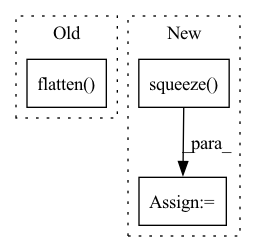

Pattern ID :18727
Before Change
if SHOW_JOINT_HIST:
plt.figure(figsize=(14, 4))
plt.subplot(1, 3, 1)
plt.hist2d(fastmarch_output.flatten(), geodistkraster_output.flatten() , bins=50)
plt.xlabel("Fast Marching")
plt.ylabel("GeodisTK")
plt.title("Joint histogram\nFast Marching vs. GeodisTK")After Change
)
tic = time.time()
toivanenraster_output = np.squeeze(
FastGeodis.generalised_geodesic2d_toivanen(input_image_pt, seed_image_pt, v, lamb, iterations).cpu().numpy()
)
toivanenraster_time = time.time() - tic
tic = time.time()
fastraster_output_cpu = np.squeeze(In pattern: SUPERPATTERN
Frequency: 5
Non-data size: 3
Instances Fragment ID: 60922848
Project Name: masadcv/fastgeodis
Commit Name: a1906e989649c1f0b8fdbed147c1d576ac5c41f3
Time: 2022-07-22
Author: muhammad.asad@kcl.ac.uk
File Name: samples/demo2d.py
M Class Name: AnonimousClass
N Class Name: AnonimousClass
M Method Name: evaluate_geodesic_distance2d(2)
N Method Name: evaluate_geodesic_distance2d(2)
M Parent Class:
N Parent Class:
M File Name: samples/demo2d.py
N File Name: samples/demo2d.py
M Start Line: 29
M End Line: 158
N Start Line: 18
N End Line: 100
Before Change
z = torch.randn(self.prepare_number, self.G_input_size,1,1).to(self.device)
z = z.to(self.device)
fake_images = self.G(z)
scores = self.D(fake_images).flatten()
// use images which have high scores top self.save_number
scores, indices = torch.sort(scores, descending=True)
best_indices = indices[:self.save_number]
After Change
if not os.path.exists(self.image_save_path):
os.makedirs(self.image_save_path)
fake_images = fake_images.mul(0.5).add(0.5).squeeze() .cpu()
image_grid = utils.make_grid(fake_images, nrow=self.save_row_number)
Fragment ID: 60922851
Project Name: luzhixing12345/anime-wgan
Commit Name: c309bb95d35f7c02abc2db995b2d8f7cd07c68a9
Time: 2022-05-15
Author: luzhixing12345@163.com
File Name: model/BaseModule.py
M Class Name: BasicGAN
N Class Name: BasicGAN
M Method Name: generate_images(1)
N Method Name: generate_images(1)
M Parent Class: nn.Module
N Parent Class: nn.Module
M File Name: model/BaseModule.py
N File Name: model/BaseModule.py
M Start Line: 90
M End Line: 113
N Start Line: 87
N End Line: 98
Before Change
def forward(self, x: torch.Tensor) -> torch.Tensor:
x = self.net(x) // batch, 512, 1, 1
// Add fc layer for final prediction
x = torch.flatten( x, start_dim=1) // batch, 512
output = F.relu(self.fc1(x)) // batch, 256
output = self.fc2(output) // batch, 64
return outputAfter Change
self.fc2 = nn.Linear(512, visual_features)
def forward(self, x: torch.Tensor) -> torch.Tensor:
x_l = self.net(x[:, :3, :, :]).squeeze()
x_r = self.net(x[:, 3:, :, :]).squeeze()
x = torch.cat((x_l, x_r), dim=-1)
// Add fc layer for final prediction
output = F.relu(self.fc1(x)) // batch, 512
output = self.fc2(output) // batch, 64 Fragment ID: 60922853
Project Name: mees/calvin
Commit Name: dc512d655e9dbaaea4f8f71529955dd9c11d5652
Time: 2021-10-26
Author: oier.mees@gmail.com
File Name: calvin/models/encoders/tactile_encoder.py
M Class Name: TactileEncoder
N Class Name: TactileEncoder
M Method Name: forward(2)
N Method Name: forward(2)
M Parent Class: nn.Module
N Parent Class: nn.Module
M File Name: calvin/models/encoders/tactile_encoder.py
N File Name: calvin/models/encoders/tactile_encoder.py
M Start Line: 22
M End Line: 24
N Start Line: 22
N End Line: 24
Before Change
def forward(self, x: torch.Tensor) -> torch.Tensor:
x = self.net(x) // batch, 512, 1, 1
// Add fc layer for final prediction
x = torch.flatten( x, start_dim=1) // batch, 512
output = F.relu(self.fc1(x)) // batch, 256
output = self.fc2(output) // batch, 64
return outputAfter Change
def forward(self, x: torch.Tensor) -> torch.Tensor:
x_l = self.net(x[:, :3, :, :]).squeeze()
x_r = self.net(x[:, 3:, :, :]).squeeze()
x = torch.cat((x_l, x_r), dim=-1)
// Add fc layer for final prediction
output = F.relu(self.fc1(x)) // batch, 512
output = self.fc2(output) // batch, 64 Fragment ID: 60922855
Project Name: mees/calvin
Commit Name: bc70db3b8fa41fbc694ceffffd549a0f8b2afe27
Time: 2021-10-19
Author: oier.mees@gmail.com
File Name: calvin/models/encoders/tactile_encoder.py
M Class Name: TactileEncoder
N Class Name: TactileEncoder
M Method Name: forward(2)
N Method Name: forward(2)
M Parent Class: nn.Module
N Parent Class: nn.Module
M File Name: calvin/models/encoders/tactile_encoder.py
N File Name: calvin/models/encoders/tactile_encoder.py
M Start Line: 22
M End Line: 24
N Start Line: 22
N End Line: 24
Before Change
def forward(self, inputs):
x = self.signal_encoder(inputs)
x = self.pos_encoding(x.flatten( 2) )
x = self.transformer(x)
x = x.flatten(1)
x = self.mlp_head(x)After Change
def forward(self, inputs):
x = self.signal_encoder(inputs)
x = x.squeeze( 1) .permute(0, 2, 1)
x = self.transformer(x)
x = x.flatten(1)
x = self.dropout(x)
x = self.mlp_head(x)
x = self.classifier(x) Fragment ID: 60922845
Project Name: kolaszko/haptic_transformer
Commit Name: aed59ae5263f8f3490b9ead581d7b112589a9f27
Time: 2021-03-02
Author: mikolaj.lysakowski.bk@gmail.com
File Name: models/haptr.py
M Class Name: HAPTR
N Class Name: HAPTR
M Method Name: forward(2)
N Method Name: forward(2)
M Parent Class: nn.Module
N Parent Class: nn.Module
M File Name: models/haptr.py
N File Name: models/haptr.py
M Start Line: 26
M End Line: 27
N Start Line: 31
N End Line: 41